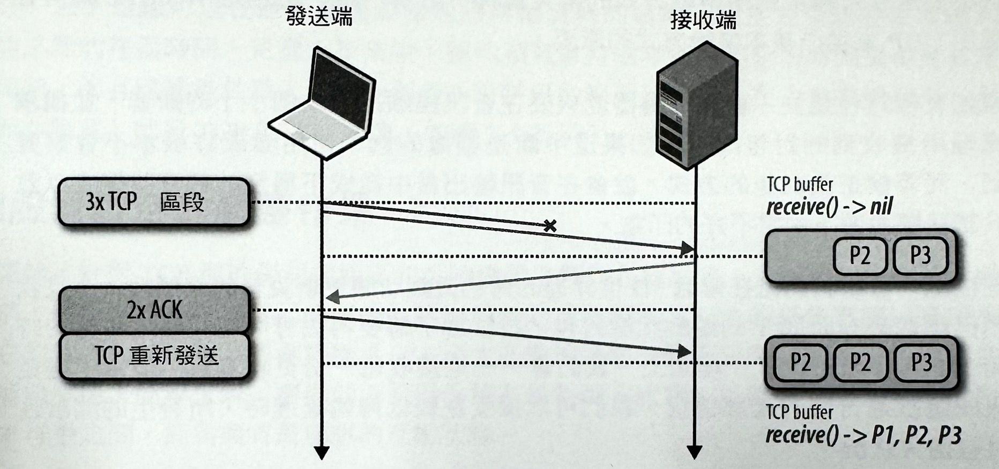

1-18-3 網路通訊基礎-TCP
網際網路的主要核心就是 IP 和 TCP這兩個通訊協定。IP（Internet Protocol，網際網路協定）會負責提供主機對主機之間的繞徑（routing）和定址處理（addressing），而 TCP（Transmission Control Protocol，傅輸控制協定）是為了在不穩定的管道上提供可靠的網路連線機制。TCP/IP通常也會被稱做是「網際網路協定套裝」（Internet ProtocolSuite），而這個概念是在 1974年由 Vint Cerf和Bob Kahn，在他們的一篇名為《封包網路內部通訊的協定（A Protocol for Packet Network Intercommunication）》報告當中所提出的建議。 最初的建議書（RFC675）被經過多次修改，直到1981 年的第四版 TCP/IP 規格時，才被正式發佈出來，不過卻被拆成兩份 RFC文件：
- RFC 791 -網際網路協定規範（IP）
- RFC 793 -傳輸控制協定規範（TCP）
在那之後，TCP 又被進行多次改良和強化，不過其核心作業並無太大改變。很快地 TCP 就取代了舊有的傳輸協定，而且是全球資訊網（World Wide Web）、電子信件、檔案傳輸等，大多數應用所採用的協定。
TCP 為不穩定的管道提供了一種可靠網路連線的實用方法，而讓網路通訊的大多數複雜部分從我們的應用程式當中隱藏起來一包括遺失資料的重新傳輸作業、依序傳遞、擁塞控制及迴避、數據完整性處理等等。當你使用 TCP資料流時，就能保證所有的位元組資料不懂能一字不漏，而且會以原本的次序傳達到客戶端。申此可見：TCP 的最佳化重點是在資料傳遞的準確性，而非即時性。這樣的特性，相對地也為瀏覽器網頁效能的最佳化工作帶來某些挑戰。
HTTP 標準並沒有特別指定要以 TCP 來當作唯一的傳輸協定。假如有需要的話，我們也可以透過 UDP （User Datagram Protocol，使用者資料包協定）這類資料包通訊端（datagram socket），或是我們所選用的其他傳輸協定來傳遞 HTTP，但實際上，目前在網際網路上的所有 HTTP 資料流量，都是因為 TCP 本身具備的許多功能特性，而選擇用它來進行傳輸的。
因此，了解一些 TCP核心機制就成了建立最佳網頁體驗的必備知識。雖然你不太會有機會在自己的應用程式裡頭直接使用 TCP 通訊連接，但你在應用層所做的設計選擇，將會決定 TCP ，以及你的應用程式用來進行傳輸的網路的執行效能。
TCP 與IP 協定之間的糾葛
大家對 IPv4 及 IPv6 這兩個標準應該都不陌生才是，但其他的IPv｛1,2,3,5｝到哪去了呢？IPv4 是 1981年9月 所公布的第四版 TCP/IP 協定。最初的 TCP/IP 提案是把兩個協定給綁在一塊的，只是一直等到第四版的草案，才正式將它們拆成兩份 RFC 文件。因此，IPv4 的 v4 是屬於它和 TCP 之間的一種延續關係一而這在過去的獨立 IPv1、IPv2、IPv3當中並不是這種情況。
當工作團隊在 1994 年開始著手規劃「次世代網際網路通訊協定」時，需要用到一個新的編號，但當時 v5 這個編號早已被分配給另一項實驗性的協定— InternetStream Protocol（網際網路串流協定，簡稱「ST」）。到後來，只有少數人才聽過的 ST 並沒有被正式公開，卻也沒有被撤銷。因此新版本就變成是 IPv6 了。
三向交握方式（Three-way handshake）
所有的 TCP 連線都是從「三向交握」（three-way handshake）開始(如下圖)。在客戶端（client） 或主機（server）可以開始進行任何應用資料的交換作業之前，雙方都必須先認同在起始封包上的序號，以及其他連線特定變數的數值。基於安全上的考量，封包上的序號是以隨機方式產生的。
-
SYN
客戶端任意取用一個序號 x，並傳送一個可能含有額外 TCP 旗標和選項的 SYN 封包。
-
SYN ACK
伺服器會把序號x加上一，並任意選取一個序號 y，再把它自己的旗標和選項附加上去，然後再送出回應封包。
-
ACK
客戶端對 x 和 y 都同時加上一，並將交握作業當中的 ACK 封包傳送出去，以完成交握作業。
當完成三向交握程序，應用程式資料就可以開始在客戶端與伺服器之間進行傳輸了。客戶端可以在 ACK 封包之後就立刻送出一個資料封包，而伺服器則必須等接收到 ACK 封包之後，才能開始派送任何資料。這樣的啟動程序（startup）會套用在每個 TCP 連線上，而這也對使用著 TCP 的網路應用程式的效能帶來一項重要含意一每一個新的連線在任何應用資料被進行傳輸之前，都會有一次往返的延遲情況。
舉例來說：假設客戶端在紐約，伺服器在倫敦，然後我們透過光纖網路開始進行新的 TCP 連線。接著，三向交握程序將至少花費56 毫秒的時間（如表）：封包的單向傳輸需要 28毫秒，之後它還得回傳至紐約。要注意的是，連線頻寬在此傳遞過程中並沒有什麼太大關係。換句話說，延誤時間是由客戶端與伺服器之間的延遲所造成，也就是說，一切是取決於紐約與倫敦之間的傳輸時間。
三向交握程序造成的延遲，使得新的 TCP 連線建立作業得花上昂貴代價，而這也是為何對任何使用 TCP 來傳瀝資料的應用程式來說，「連線重複使用」是一項很重要的最佳化處理方式了。
TCP 快啟機制
TCP 交握階段已被證實是整個網路瀏覽延運問題的主要來源，而這對為了取得各個主機的大量資料所發出的許多很小的 TCP 請求封包來說，卻佔了很大的部分。
「TCP 快啟」（TCP Fast Open）是為了減少因新的 TCP 連接所產生的延遲代價，而被創造出來的一種機制。根據 Google 所做的流量分析和網路模擬結果，研究員表示，允許在 SYN 封包裡頭進行資料傳輸作業的 TCP 快啟機制，可以降低 15% 的 HTTP 傳輸延遲，並讓整個網頁下載時間平均減少 10% 以上，而在某些高延情況的案例當中，甚至可減少 40%。
客戶端與伺服器這兩邊的 TFO 快取支援功能，目前都已經被實作在 Linux 3.7+ 核心裡頭，並成為新的客戶與伺服器的可用選項。儘管 TFO 還不能解決所有問題，但它有助於減少在完成三向手握程序的來回傳輸代價，而且在某些特定情況下也能發揮作用一比如說，在 SYN 封包裡頭，有資料負載量的最大限制。這使得只有特定類型的 HTTP 請求可以被發送出去，也因此 TFO 機制就只在有加密 cookie 需求的重複連線情況下得以發揮作用。有關 TFO 的容量和限制的細節討論，請參考針對「TCP Fast Open」的最新 IETF 草案。
擁塞迴避與控制方式
「擁塞崩漬」（congestion collapse）
在 1984 年初，John Nagle 曾經在文章中提過所謂「擁塞崩漬」（congestion collapse）的情況，而那樣的狀況將會對節點間任何具有不對稱頻寬容量的網路造成影響：
擁塞控制（congestion control）是在複雜網路連線上的一個眾所皆知的問題。我們已經發現到，將純資料包協定的國防部的 IP，與傳輸層協定的 TCP，混合在一起使用時，很容易因為傳輸層和資料層之間的互動情況，而造成不尋常的擁塞狀況。特別是 IP 閘道很容易就會發生所謂的「擁塞崩潰」狀況，尤其是當這類閘道所連接的是具備各種不同頻寬的網路上的時候⋯
假如任何主機的往返時間超過重新傳送的最大間隔的話，這主機就會一再地把相同資料包的複本發送到網路上。如此一來，整個網路就會出現很大的麻煩問題。最後，在轉換節點上的所有可用緩衝區就會被塞滿，並造成封包丢失情況。此時，封包傳遞的往返時間全都達到最大值。因此主機就會對每一個封包發送好幾次，以致於最後每個封包都會有好幾個副本被送達目的地。這就是「擁塞崩潰」。這種狀況會穩定下來。一旦到達飽和點，而用來篩選要被丟棄的封包的演算法還不太差的話，網路將會以稍差的狀態繼續運作下去。
---John Nagle RFC 896
從該份報告可以得知，當時的 ARPANET 還不會形成「擁塞崩潰」問題一因為當時大多數的節點都擁有相同的頻寬，而且主幹網路擁有相當龐大的容量。然而，這些主張並沒有維持多久。到 1986 年時，隨著節點的數量（超過5000個）和各種類型的持續成長，一連串的擁塞崩潰事件則立刻橫掃了整個網路世界一在某些情況下，容量甚至會掉落到原本的千分之一，以致於整個網路幾乎就跟停擺沒兩樣！
為了能夠解決這樣的問題，TCP 裡頭就實作了多種機制，來管制資料在兩個方向裡的發送速率一而這類的機制包括：流量控制、擁塞控制，以及擁塞防止。
美國國防部先進研究計畫署網路（Advanced Research Projects AgencyNetwork，簡稱 ARPANET）就是現代網路的前身，而且是世界第一個實用的封包交換網路系統。這項計畫是在 1969 年正式展開，直到 1983 年的時候，TCP/IP 協定取代了較早的 NCP（Network Control Program，網路控制程式），而成為目前主要的通訊協定。剩下的其他部分，就都成為歷史了。
流量控制
「流量控制」（flow control）是一種用來防止發送端，發出超過接收端所能處理的資料量的機制一接收端當時有可能正在忙碌、負載過重，或者只願意配置固定的緩衝區空間等情況。有鑑於此，雙方的 TCP 連線（參考下圖）都會公布它們自己的可接收視窗大小 （rwnd, receiver window），以便讓對方知道自己用來保存接收到的資料的可用緩衝區大小。
當連線剛被建立起來的時候，雙方都會限以自己本身的系統預設值，來初始自己的 rwnd 值。一般網頁的大多數資料，都是從伺服器流向客戶端，而這樣將可能會在客戶端出現瓶頸。反之，當客戶端要上傳照片或影片，而會出現把大量資料傳送給伺服器的情況的話，伺服器的接收視窗就可能變成限制因子了。
假如，無論任何原因，使得其中一方無法跟上另一方的話，就要把更小的視窗公布給發送端知道。如果收到的視窗大小是。的話，就會被當成是，在緩衝區裡頭的現有資料被應用層給清除掉之前，已經不會再發送出任何資料的訊號。這樣的工作流程會在整個 TCP 連線的過期當中持續下去：每一個 ACK 封包都會附帶著每一邊的最新 rwnd 值，以容許雙方都能動態調整容量的資料流量速率，並處理發送端和接收端的速度。
視窗縮放機制（RFC 1323）
最初的 TCP 規格針對接收視窗大小的公布程序，分配了 16個位元，因而決定了發送端和接收端所能公布的最大值的最高上限（216，或65,535個位元組）。然而，這樣的上限通常無法獲得最佳效能，尤其是在需要展現出高頻寬延遲乘積（Bandwidth-Delay Product）的網路裡頭。
TCP 頭部的 接收視窗大小（Window Size） 欄位有 16 位元（bits）。 這表示這個欄位最多可以表示 2¹⁶ 種不同的值，範圍從 0 到 2¹⁶ - 1。
65,535 是怎麼來的？ 2¹⁶ = 65,536 但因為數字是從 0 開始計算，所以最大值是 65,536 - 1 = 65,535。
這表示 TCP 連線中的 單次傳輸窗口 最大可以達到 65,535 個位元組（bytes），這限制了發送端在未收到 ACK 確認前能發送的最大數據量。 後來為了突破這個限制，TCP 窗口縮放（Window Scaling，RFC 1323） 擴展了這個大小，使其能超過 65,535，讓高頻寬的網路能夠更有效運作。
為了解決這樣的問題，在 RFC1323 文件中，開始草擬要提供一種「TCP 視窗縮放機制」（TCP window scaling）的選項，以允許我們把接收視窗大小的最大值，從 65,535 個位元組，給提升到 1 GB！視窗縮放機制選項會在三向交握過程當中進行通訊處理，並且會夾帶一個值，以便用來表示在未來的 ACK 裡頭的 16位元 視窗大小欄位，要向左平移的位元數。
現今的 TCP 視窗縮放機制，在所有主要的平台上都已經被預設為啟用狀態。不過，中繼節點、路由器，和防火牆都可以進行改寫，甚至把這個選項給移除掉。 如果你對伺服器或客戶端的連線，無法使用到全部的可用頻寬的話，那麼最好是先從查核視窗大小的互動作業開始著手進行。在 Linux 作業平台上，視窗縮放機制設定都可以透過以下命令來進行查核和啟用：
$ sysctl net.ipv4.tcp_window_scaling
$ sysctl -w net.ipv4.tcp_window_scaling=1
緩步啟動（Slow-Start）
儘管 TCP 裡頭具有流量管理機制，然而網路擁塞崩潰情況卻在後來的 1980年代中期，變成了不可忽視的問題了。問題在於，流量控制雖然可以避免發送端把過量資料發傳送給接收端，但是卻沒有任何機制可以防止任何一端把過量的資料送上網路一也就是說，發送端或接收端都無法在新連線一開始的時候，就知道可用頻寬，也因此就需要有另一個機制，來進行這樣的評估，並且會根據網路的不斷變化情況，去調整它們的速度。
為了以實例來闡述這種調整機制的好處，請先想像一下自己在家的情況，而當有個龐大的影片要從遠端主機以串流方式傳送到你家，而這台主機被設定成會以充滿你的下載流量的方式，來賦予你最高品質的傳輸體驗。接著，在你的家用網路上有另一個使用者，為了下載軟體更新程式，而開啟了一個新的連線。突然間，影片串流的可用下載頻寬的流量大幅降低，而影片主機就必須調整它的資料速率一否則，要是它還是持續使用相同速率來進行傳輸的話，當中的某些中繼閘道就會被資料給塞爆，並且會開始出現資料遺失問題，進而導致網路的無效使用情況。
1988年，Van Jacobson 和 Michael J. Karels 兩人為了解決這類問題，特別撰寫了緩步啟動、擁塞迴避、快速重傳，以及快速修復等演算法。這四種很快地都變成了 TCP 規格中的一部份。事實上，人們普遍認 為 TCP 就是做了這些更新，才使得網際網路在 80年代 和 90年代初期 的時候，沒有因為流量呈指數成長的問題而崩解。
若要瞭解緩步啟動機制（slow-start），最好的方式就是觀察它的實際運作情況。因此，同樣地，讓我們再回到那個位於紐約，並且要從倫敦的主機上取得一個檔案的客戶端的例子來看。首先，會先執行三向交握程序，而在這過程當中，兩邊都會在 ACK 封包裡頭，公布自己的可接受視窗（rwnd）大小（如圖下圖）。一旦收到最後的 ACK 封包，我們就可以開始進行應用程式的資料交換作業了。
評估客戶端和伺服器之間的可用容量的唯一方法，就是透過交換資料的方式來進行測量，而這就是「緩步啟動」（slow-start）被設計出來的主要目的。若要開始啟動，伺服器會先對每個 TCP 連線，初始一個新的擁塞視窗（congestion window, cwnd）變數，並將它的初始值設定成一個保守的系統設定值（在Linux上預設值是 initcwnd）。
擁塞視窗大小（cwnd）發送端在接收到來自客戶端的認可訊號（ACK）之前，可遞送資料量的發送端限制。
cwnd 變數並不會在發送端和接收端之間被進行公布或交換 一 在本回的案例當中，它將會是由位在倫敦的主機所負責維護的一個私有變數。此外，還會引入一條新的規則：在 各戶端和伺服之間還未被認可（未收到 ACK 訊號）之前的可傳遞資料的最大數量， 是 rwnd 和 cwnd 變數中的最小數值。這樣看起來似乎都沒問題，不過伺服器和客戶端要如何去判斷它們的擁塞視窗大小的最佳數值呢？畢竟，網路狀況隨時都在變化，而且就像我們在先前的範例當中所看到的那樣，即使在相同的兩個網路節點之間也一樣，因此最理想的情況，就是我們可以去使用某種可在不需要手動調整每個連線的視窗大小的演算法。
解決方式就是慢點啟動，並隨著封包被認可的情況來逐漸增加視窗大小一這就是「緩步啟動」！起初，cwnd 開始值是被設定為 1個網路區段（network segment）；RFC 2581 則在 1999年四月的時候，把這個值更新為 4個區段，而最近這個值在 2013年四月的時候，又被提升到 10 個區段。
由於一個新的 TCP 連線的資料傳遞最大值是 rwnd 和 cwnd 值當中的最小數值；因此，伺服器可以發送 4個網路區段給客戶端，然後就會先停止，並等候一個認可訊號。接著，針對每個已收到的 ACK，緩步啟動演算法會指示伺服器將它自己的 cwnd 視窗大小增加一個區段一針對每個被認可的封包，就會有兩個新的封包可以被發送出去。TCP 連線的這個階段，就是一般所謂的「指數成長」（exponential growth）期（如圖下圖），而這是因為客戶端和伺服器正試圖要盡快地彙整出它們之間的網路封包的可用頻寬所造成的結果。
那麼，為何我們在開發瀏覽器的應用程式時，要特別記得把「緩步啟動」當成一個重要因素來考量呢？由於 HTTP 和許多其他應用協定都是透過 TCP 來執行，而不管可用頻寬如何，每個 TCP 連線都必須經歷緩步啟動的階段一簡單來說，我們不能一開始就立刻以最大容量來傳送資料！
相反的，我們一開始會先搭配一個較小的擁塞視窗，並且針對每次的往返情況再遞增上去一也就是指數成長。結果，到達特定流量目標的所需時間，就會是客戶端和伺服器間的往返時間，與初始擁塞視窗大小之間的一種函數關係。
公式2-1：到達大小 N 的 cwnd 大小的所需時間：
為了以實際案例來推算緩步啟動效果，讓我們假設有以下這樣的情況：
- 客戶端與伺服器的可接收視窗（rwnd）：65,535 bytes （64 KB）
- 初始擁塞視窗（cwnd）：4區段（RFC 2581）
- 往返時間：56 ms（倫敦到紐約）
我們將在這個例子以及後續的範例當中，針對初始擁塞視窗採用舊式（RFC 2581）的 4個網路區段的數值來處理，因為這個值仍然是大多數主機最常採用的值。這樣，應該沒問題？以下的例子應該可以促使你去對自己的主機進行更新！
儘管有 64KB 的可接收視窗大小，然而一個新的 TCP 連接的總吞吐量（throughput）最初還是會受限於擁塞視窗的大小。事實上，若要到達 64KB 的限制，我們就得將擁整視窗大小提升到 45個區段才行，而這得花上 224毫秒：
那要經過 4次往返（如下圖），以及幾百毫秒的延遲，才能讓客戶端和伺服器之間的總吞吐量到達 64KB！客戶端和伺服器之間或許具備 Mbps 資料速率等級的傳輸容量，但那根本就毫無影響一這就是「緩步啟動」。
若要減少擁塞視窗成長所需要花費的時間，我們可以先從減少客戶端和伺服器之間的往返時間著手一例如，在實際地理位置上，將主機搬到離客戶端更近的地方。或者，可以把最初擁塞視窗大小，提升到新的 RFC 6928 所規範的 10個區段。
「緩步啟動」在串流下載之類的龐大傳輸作業當中，並不是很嚴重的問題，因為客戶端和伺服器將會在數百毫秒之後，就達到它們的最大視窗大小，並持續以近乎最快速度的方式來進行傳輸 一 也就是說，由緩步啟動階段所造成的成本，將會在更大的傳輸週期當中給分攤掉。
然而，對於通常較為簡短，且會突然暴增的許多 HTTP 連線來說，連線請求往往在還沒達到最大視窗大小之前就結束了。結果，許多網頁應用程式的效能往往就受限於伺服器和客戶端之間的往返時間一「緩步啟動」會限制到可用頻寬的總吞吐量（throughput），因而對小傳輸量的效能來說，有不利的影響。
緩步啟動重啟（SSR）
除了能夠調整新連線的傳輸率以外，TCP 還可以實作一種名為「緩步啟動重啟」（Slow-Start Restart, SSR）機制，而這項機制會在連線根據指定時間週期而呈現閒置狀態 （idle）之後，對連線的擁塞視窗進行重置（reset）。這道理很簡單一網路狀況有可能會在連線閒置的時候就已經發生改變，因此若要避免擁塞情況，就要把視窗重置為一個「安全」的預設值。
顯然，SSR 對於 HTTP 持續連線（keepalive connection）這類會持續連接，並且可能會經常進入閒置狀態的 TCP 連線的效能，造成相當大的衝擊。因此，建議你還是關掉主機上的 SSR 選項。在 Linux 平台上，SSR 的設定可以透過以下命令來進行檢查和關閉：
$> sysctl net.ipv4.tcp_slow_start_after_idle
$> sysctl -w net.ipv4.tcp_slow_start_after_idle=0
為了解說三向交握和緩步啟動階段，在一個簡單 HTTP 傳送上的影響情況，就讓我們假設，有一個位在紐約的客戶端，透過一個新的 TCP 連線去對倫敦的主機請求一個 20 KB的檔案（如下圖），而其他連線參數如下：
- 往返時間：56 ms
- 客戶端與伺服器頻寬：5Mbps
- 客戶端與伺服器接收視窗大小：65,535 bytes
- 初始擁塞視窗大小：4 segments（4×1460 bytes =5.7 KB）
- 伺服器產生回應的處理時間：40 ms
- （假設）無封包遺失、每個封包都會收到 ACK 訊號，而 GET 請求只安插在單一區段裡頭
透過一個新的TCP 連線來取得檔案:
0 ms 客端透過一個 SYN 封包來展開 TCP 交握程序。
28 ms 伺服器以 SYN-ACK 做出回應，並指定它的 rwnd。
56 ms 客戶端認可 SYN-ACK，在指派它自己的 rwnd 大小後，立刻發送出 HTTP GET 請求。
84 ms 伺服器收到 HTTP 請求。
124 ms 伺服器在發生 ACK 暫停情況之前，完成 20KB 回應的產生作業，並送出 4個 TCP 區段（最初的 cwnd 大小是4）。
152 ms 客戶端接收到 4個區段，並一一認可每個區段。
180 ms 伺服器針對每個 ACK 遞增它的 cwnd，並送出 8個區段。
208 ms 客戶端接收到 8個區段，並一一認可每個區段。
236 ms 伺服器針對每個 ACK 遞增它的 cwnd，並送出剩下的區段。
264 ms 客戶端接收到剩下的區段，並一一認可每個區段。
就當作練習一般，將 cwnd 的值以10個網路區段的方式，來取代原本的 4 個的情況，試著執行如上圖那樣的流程。你應該會發現到，有一整個網路往返延渥消失不見了！一此時效能馬上就提升了 22%。
在客戶端和伺服器之間有往返時間為 56ms 的一個新的 TCP 連線上，一個 20 KB 的檔案得花上 264 ms 的傳輸時間。為了比較，讓我們假設客戶端可以重複使用同一個 TCP 連線（如下圖），並且再一次地發出相同的請求。
透過一個現有的TCP連線來取得檔案:
0 ms 客戶端發出 HTTP 請求。
28 ms 伺服器接收到 HTTP 請求。
68 ms 伺服器完成 20 KB 回應的產生作業，然而 cwnd 值已經超過要發送檔案所需要的15個區段；因此它會一次就派發出所有的區段。
96 ms 客戶端接收到全部的15個區段，並一一認可每個區段。
由於相同的請求會建立在同一個連線上，但是卻不會有三向交握的成本和緩步啟動階段的代價，因此這次只花了 96毫秒就完成傳輸作業，進而在效能上提升了 275%！
在這兩個案例當中，伺服器和客戶端之間可使用 5 Mbps 的最高頻寬的事實，並不會在 TCP 連線的啟動階段當中造成任何影響。然而，延和擁塞視窗的大小則是其中的限制因子。
事實上，第一次以及透過現有連線所發出的第二次請求之間的效能間隔，就只有在我們提高往返時間的情況下才會擴大；這部份，或許可試著搭配稍微不同的值去演練看看。一旦你開始對 TCP 擁塞控制機制產生興趣，那麼持續連線（keepalive）、管線處理（pipelining），以及多工處理（multiplexing）等各類最佳化方式，都將會有所幫助。
提高 TCP 的擁塞視窗的初始大小
將伺服器的最初 cwnd 大小提高到最新 RFC 6928 的 10個區段的方式，對於使用著 TCP 連線的所有使用者和所有應用程式來說，是能夠提升效能的最簡單方法之一。所幸，許多作業系統都已經將它們的最新核心，更新到可以使用更高的 cwnd 值一更多細節，請查閱相關文件和釋出說明。
在 Linux 環境當中，IW10 是核心版本在 2.6.39版以上的最新預設值。然而，請不要只停留在那個版本上一要是你升級到 3.2版以上的話，還能夠得到其他重要更新所帶來的好處一例如，在先前所提到的「TCP速率比例縮減」功能就是其中之一。
擁塞迴避（Congestion Avoidance）
要先有個概念：TCP 主要被設計成運用封包遺失狀況來當作協助控管它的效能的一種反饋機制。換句話說，即使發生封包遺失情況，也不會發生問題。「緩步啟動」會搭配保守的視窗大小來對連線進行初始化，並針對每次的往返情況，倍增資料傳輸量，直到超過接收者的視窗大小、系統內定的擁塞門檻值（ssthresh），或者是當有個封包發生遭失狀況為止一此時，擁塞迴避演算法（如圖3曲線圖）就會開始發揮作用了。
擁塞迴避（congestion avoidance）本身隱含了一個假設一封包遺失狀況是網路發生擁塞的一種跡象：沿著傳輸路徑，我們已經遭遇到了一個被迫會開始拋棄封包的擁塞線路或路由器之類的地方，因此我們得調整視窗大小來避免造成更多的封包遺失狀況，同時也避免網路過度承載的情況。
一旦擁塞視窗被重置（reset），擁塞迴避機制會針對要如何調整視窗來讓封包遺失現象降到最低的情況，去指定它自己的演算法。在某個時間點的時候，又會再發生另一個封包遺失事件，而這樣的程序將會重複地再進行一遍。假如你曾經追蹤過 TCP 連線的吞吐量的話，就會在裡頭觀察到一個鋸齒圖樣，而現在你應該就知道原因了一那就是擁塞控制與迴避演算法，針對網路裡的封包遺失狀況去調整擁塞視窗大小的結果。
最後，值得注意的是一擁塞控制和迴避的改善方法，在學術研究和商業用途上都是一塊很活躍的領域一針對不同的網路類型、不同的資料傳輸方式，都有著各種調整方式。 目前，根據你的作業平台，你很可能會從許多方案當中選用其中一種：這當中包括有 TCP Tahoe 和 Reno（最早的實作方案）、TCP Vegas、TCP New Reno、TCP BIC、TCPCUBIC（Linux上的預設方式），或 Compound TCP（Windows上的預設方式）。總之，無論喜好如何，擁塞控制和迴避是左右主要傳輸效能的關鍵。
TCP 的速率比例縮減方式
決定可用來解決封包遺失問題的最佳方案，是一項很重要的練習：如果太過躁進，一個間歇性的遺失封包，就可能會對整個連線的吞吐量造成重大影響，而你要是調整的速度不夠快的話，就會導致更多的封包遺失情況！
剛開始，TCP採用的是「倍增減量與累積增量」（Multiplicative Decrease andAdditive Increase, AIMD）演算法一當封包遺失狀況發生時，就先將擁塞視窗大小減半、然後針對每次往返，將視窗大小緩慢地增加一個固定的傳輸量。然而，在很多情況下，AIMD 的方式有點過於保守，因此就開始有其他新的演算法被發展出來。
「速率比例縮減」（Proportional Rate Reduction, PRR）就是在 RFC6937 所提出來的一種新的演算法，而這個演算法的目標，就是要提升封包發生遺失時的恢復速度。這演算法的效果如何呢？根據發展出這項新演算法的 Google 所做的測量結果來看，它可以讓有封包遺失情況的連線，減少 3~10% 的平均延遲時間。
PRR現 在是 Linux 3.2+ 核心中，預設的擁塞迴避演算法一這當然又是提醒你該對主機進行更新的另一個好理由了！
頻寬延遲乘積（Bandwidth-Delay Product）
在 TCP 中內建的擁塞控制和擁塞迴避機制，附帶著另一個重要的效能關連一收送雙方的最佳視窗大小，一定會根據兩端之間的往返時間和目標資料速率而有所變化。
若要瞭解導致這種情況的原因，請先回憶一下，在發送端和接收端之間，未被認可的最大傳輸資料量，是由接視窗（rwnd）和擁塞視窗（cwnd）大小的最小值來決定的：目前的接收視窗大小是由每一個 ACK 來傳達，而擁塞視窗則是由發送端根據擁塞控制和迴避演算法來動態調整的。
假如發送端或接收端的任何一方超過未認可資料的最大量的話，它就必須先停止進行任何處理，並等候另一方認可某些封包。那麼，等候時間會有多久呢？那就得由兩端之間的往返時間來決定了。
頻寬延遲乘積（Bandwidth-delay prodct,BDP）
資料連線的容量與其兩端延遲時間的乘積，就是當下在傳輸線上的任何位置裡頭所傳輸的未認可資料量的最大值。
假如發送端或接收端的其中一方經常會被迫停止，以等候對先前封包的認可訊號的話，那就會在資料流動上出現間斷狀況（如下圖），而這樣就會限制連線的最大傳輸吞吐量了。若要解決這種問題，視窗大小就應該要弄得夠大，如此另一端就可以在前一個封包的 ACK 訊號從客戶端返回之前，毫無間斷地持續進行著資料的發送作業，而達到最大吞吐量。因此，理想的視窗大小就得由往返時間來決定！採用較小的視窗大小，你就會限制連線的總吞吐量，而無關端點之間的可用或已公布頻寬大小了。
低擁塞視窗而產生的傳輸間斷情況:
所以，流量控制（rwnd）和擁塞視窗（cwnd）的值需要設多少才好呢？其實有一個很簡單的計算方式。首先，假設 cwnd 和 rwnd 大小的最小值 16 KB，而往返時間為 100毫秒：
不管在發送端和接收端之間的頻寬有多大，這個TCP連線的資料傳輸率，都不會超過 1.31 Mbps！若要達到更高的總吞吐量，我們就得提高最小視窗值或降低往返時間。
同樣地，假如我們可以知道兩端的往返時間和可用頻寬的話，我們就可計算出最佳的視窗大小。在同一個例子中，假設往返時間一樣（100毫秒），但發送端的可用頻寬為 10Mbps，而接收端是在一條吞吐量為 100 Mbps+ 的網路線上。假如在它們之間沒有任何網路擁塞情況，表示我們可以讓客戶端完全使用到 10 Mbps 的連線。那麼：
從以上計算式可得知：視窗大小至少要 122.1 KB，才能充滿 10 Mbps 的傳輸量。回想之前所談過的，除非有進行視窗縮放處理，否則 TCP 的最大接收視窗大小是 64 KB 一這個你得檢查一下客戶端和伺服器的設定了！
所幸，視窗大小的協商與調節作業是由網路堆疊自動管理，並且會根據當下狀況進行相對應調整。但是，有時候它仍然會是 TCP 效能上的限制因素。你是否曾經想過，為何你的連線都只會用到部分的可用頻寬來進行傳輸呢？而且即使你都知道客戶端和伺服器這兩方的最高速率容量，卻還是可能只會使用一個較小的視窗大小來進行傳輸一已飽和的一端會公布出較低的接收視窗，而品質不佳的網路狀態和高封包遺失情況，會重置擁塞視窗，或者套用明確的流量管制作業（traffic shaping），以致於限制了你的連線吞吐量。
高速區域網路的頻寬延遲乘積
BDP 是往返時間和目標資料速率間的一種函數關係。因此，當往返時間是在高傳輸延遲情況下的一個常見瓶頸時，那麼也會是在內部區域網路的一個瓶頸！
若要在往返時間為1毫秒的情況下達到 1 Gbit/s 的程度，我們也將會需要具備一個至少為 122 KB 的擁塞視窗。計算方式就跟之前看到的完全一樣；我們只要把幾個 0 加到目標資料速率裡，並將相同數量的 0 從往返延當中給移走即可。
線頭阻塞（Head-of-Line Blocking）
TCP 會在不穩定的管道上提供可靠的網路連線方式，而這當中包含了基本的封包錯誤的檢查和更正機制、依序傳遞、遺失封包的重新傳送處理，以及流量控制、擁塞控制，還有被設計用來處理最大效能節點的網路傳輸作業的擁塞迴避機制。總括來說，由於這些功能而使得 TCP 成為大多數應用程式的首選傳輸工具。
然而，雖然 TCP 是最受歡迎的選擇，但卻不是唯一，也並非是適用於各個場合的最佳選項。更明確地來說，某些像是依序且可靠的封包傳遞之類的功能，就並非是絕對必要的，甚至還可能會引發非必要的延遲和負面的效能影響。
若要瞭解這類情況，可以先回憶一下：每個 TCP 封包都會在被放置到網路上的時候，夾帶著一個獨一無二的序號，而該項資料一定會被依序地傳到接收端（如下圖）。假如其中有個封包在送往接收端的路上發生遭失狀況的話，所有的後續封包就必須先被保留在接收端的 TCP 緩衝區裡頭，直到遺失的封包被重新傳送，並且到達接收端為止。由於這項傳輸作業是在 TCP 層裡頭被完成的，因此我們的應用程式就無法看到 TCP 的重新傳輸作業，或是被佇列的封包緩衝區，而且在它能夠去對資料進行存取之前，就必須先等到完整的序列封包全都被接收到為止。換句話說，當它試著去讀取來自通訊埠的資料時，就會發現到傳輸延遲情況。這種效果就是所謂的「TCP 線頭阻塞」（head-of-line blocking, HOL blocking）。
線頭阻塞所產生的延情況，允許我們的應用程式不一定就得去處理封包的重新排序與組合作業，以便讓我們的應用程式代碼可以變得更為簡單。不過，這會在封包到達時間裡，出現不可預知的延變化一這就是所謂的「抖動」（jitter），而它會對應用程式的效能造成負面影響。
TCP 線頭阻塞：
其實，有些應用程式可能並不是很需要用到可靠或依序的傳輸方式：假如每個封包本身就是一個獨立的訊息的話，那就不需限定採用依序傳輸了。此外，要是每個訊息都會覆蓋掉先前的所有訊息的話，那麼對可靠傳輸的要求就可以被整個剔除了。遭憾的是，TCP 並沒有提供這樣的設定方式 一 因為所有封包都會被排序，而且必須被依序傳輸出去。
能夠處理無序傳輸或封包遭失，並對延遲或料動情況相當敏銳的應用方式，就很適合用來當作替代性的傳輸方式 一 例如，UDP。
封包遺失是可接受的
事實上，封包遺失是 TCP 為了獲得最佳傳輸品質所不可避免的情況！被拋棄的封包會扮演著回饋機制的角色，以便讓接收端和發送端去調整它們的發送速率，來避免發生網路超載情況，並讓延遲降到最低。此外，有些應用程式即使有封包遺失，也不會產生不良效果一像是音訊、視訊，以及遊戲狀態更新，都是屬於應用程式資料不要求有可靠或依序傳輸方式的常見實例。附帶一提，這也是 WebRTC 為何會採用 UDP 來當作基本傅輸方式的原因。
假如有個封包遺失，音訊解碼器就只要在音訊裡頭插入一個小小的斷音，並繼續處理所接收到的封包即可。如果這中斷是細微的話，使用者或許根本不會察覺到，而等候遺失封包的方式，就會在音訊輸出當中造成不穩定的頓音狀況，以致於讓聆聽者留下相當不好的印象。
同樣地，假設我們是在傳遞 3D 世界裡的角色遊戲狀態更新資料的案例裡，一旦我們已經取得在時間 T 的遊戲狀態封包，往往就不需要再去等候用來描述角色於時間 T-1 的狀態封包了 一 理想上，我們會一一地接收每一份更新資料，但為了避免造成遊戲進行時的延遲情況，我們可以接受在較低傳輸延遲時，所發生的間歇性封包遺失狀況。
TCP的最佳化處理
TCP 是一種會公平看待所有網路節點，並讓所使用的網路達到最有效運用的適應性協定。因此，優化 TCP 的最佳方法，就是去調校 TCP 在感測目前網路狀況之後，根據在它的相關層級的類型和需求，來調整其本身行為反應的方式 一 例如：無線網路可能就需要使用不同的擁塞演算法，而某些應用程式則需要自訂服務品質 （quality of service，QoS），以傳遞最佳的體驗感受。
各種應用需求與每一種 TCP 演算法的許多情況的緊密交互作用下，使得 TCP 的調校與最佳化方式，成為學術與商業研究上的一個無止盡的領域。在本章當中，我們所談到的那些影響 TCP 效能的各種因素，也都只是皮毛而已。其他像是「選擇性認可」（selective acknowledgments, SACK）、已延遲認可（delayed acknowledgments），以及快速重傳之類的其他機制，都會讓每個 TCP 的過程變得更加難以理解、分析，或調整（或許有人覺得這樣反而更有趣也不一定）。
然而，雖然每一種演算法和回饋機制的特定細節都將會持續進化，但是核心原理和它們的用意卻都是一樣的：
- TCP 三向交握會引來一個完整的往返延選情況。
- TCP 緩步啟動會被套用到每個新的連線上。
- TCP 流量和擁塞控制會控管所有連線的吞吐量。
- TCP的吞吐量會是由目前的擁塞視窗大小所控管。
總之，TCP 連線可以在最新高速網路裡頭傳輸資料的速率，往往是受限於接收端和發送端之間的往返時間。更進一步來說，雖然頻寬會持續增加，但延遲時間還是會被光速所侷限，而且已經是其最大值的一個最小常數係數範圍以內了。在大多數情況下，延遲（而非頻寬）就是 TCP 的效能瓶頸（如圖7所示）